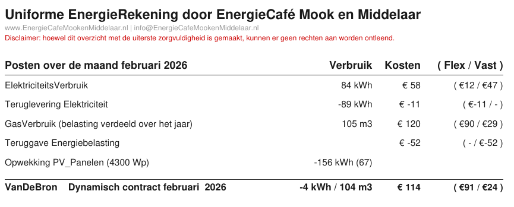

ACM, Vereninging Eigen Huis, Consumentenbond, Radar zijn al sinds 2017 bezig om energieleveranciers zo ver te krijgen dat ze een leesbare energierekeningen leveren.
Consumentenbond: Een modelcontract maakt vergelijken van energietarieven makkelijker omdat alle energieleveranciers in dat contract exact dezelfde voorwaarden moeten gebruiken.
Per 01-01-2026, is het bij de nieuwe energiewet vastgelegd dat iedere leverancier een vast-model-contract en een variabel-model-contract moet aanbieden.
Bij de meeste leveranciers is het niet te vinden en moet je ze bellen om zo'n contract te kunnen inzien. In het algemeen kun je stellen dat het duurder is dan een gewoon vast contract want er mogen geen kortingen of bonussen worden gegeven.
Hoe moeilijk kan het zijn ?
Hier zien we een samenvatting van de nota van VanDeBron, en deze lay-out kan voor iedere leverancier worden gebruikt. Een paar opmerkelijke zaken:
- We zien direct hoeveel energie er is afgenomen en teruggeleverd
- Alle prijzen zijn inclusief BTW, zoals het hoort voor een gewone consument
- Naast de totale kosten van een post, zien we deze kosten opgesplitst in Vaste kosten (onafhankelijk van de hoeveelheid verbruikte energie) en Flex kosten (variabel, dus direct afhankelijk van de hoeveelheid verbruikte energie)
- We zien ook wat de Zonnepanelen hebben opgebracht. Het getal tussen haakjes geeft aan hoeveel energie (kWh) zelf is verbruikt.
- Soms zijn ook de vaste kosten afhankelijk van in welke staffel je verbruik valt (voorbeelden vastrecht gas, energiebelasting gas), deze zijn in de eerste versie nog niet verwerkt, maar kunnen gemakkelijk worden toegevoegd

Even snelle redenering, als we van het gas afgaan, is dat €120 goedkoper.
Daar kunnen we ongeveer 1200 kWh voor kopen, hetgeen equivalent is met 120 m3 gas.
Dus zelfs met een COP=1 (bijvoorbeeld InfraRood panelen), is het rendabeler om van het gas af te gaan.
Consumentenbond Modelcontract
Een modelcontract maakt vergelijken van energietarieven makkelijker omdat alle energieleveranciers in dat contract exact dezelfde voorwaarden moeten gebruiken. Er is een variabel contract dat maandelijks opzegbaar is. Sinds 2026 is er ook een vast contract van minimaal 1 jaar. Maar let op: vaak is een modelcontract niet de goedkoopste optie.
Hieronder vind je een link per energieleverancier naar hun modelcontract (ben vooral niet verbaasd als je niets kunt vinden).
ACM geen woo
De Autoriteit Consument & Markt (ACM) maakt geen documenten openbaar over de vaststelling van het nieuwe modelcontract voor energieleveranciers en over het onderzoek van de ACM naar de terugleverkosten voor zonnestroom.
Om "eenvoudig" leveranciers met elkaar te vergelijken. Bij de meeste leveranciers is het niet te vinden en moet je ze bellen om dat te kunnen inzien. In het algemeen kun je stellen dat het duurder is dan een gewoon vast contract want er mogen geen kortingen of bonussen worden gegeven.
Onder de nieuwe Energiewet (die per 1 januari 2026 de Gaswet en Elektriciteitswet vervangt) zijn energieleveranciers verplicht om twee soorten modelcontracten aan te bieden aan huishoudens en kleinverbruikers:
ACM Modelcontract
Innova modelcontract
Innova alle downloads
Delta Modelcontract
Greenchoice: Modelcontract afsluiten?
Greenchoice Modelcontract
Wil jij een modelcontract afsluiten bij Greenchoice of heb je vragen? Dan kun je ons bellen op het telefoonnummer: 010 747 02 22. Dan regelen we het voor je.
Essent Modelcontract
Een modelcontract is een gestandaardiseerd energiecontract waarvan de voorwaarden zijn vastgesteld door de Autoriteit Consument & Markt (ACM). Iedere energieleverancier in Nederland is verplicht om een modelcontract aan te bieden. Daardoor kun je energiecontracten van verschillende leveranciers eenvoudig met elkaar vergelijken.
Er zijn twee soorten modelcontracten: